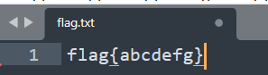
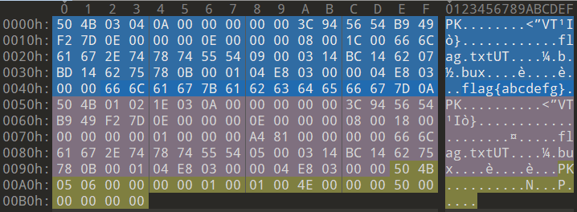
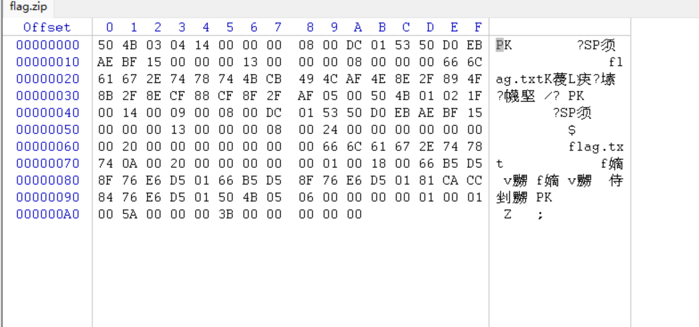

参考：https://goodapple.top/archives/700（很棒的基础教学博客）
zip文件又三个部分组成：
压缩源文件数据区+压缩源文件目录区+压缩源文件目录结束标志
背景：创建两个zip文件 一个无密码 一个有密码 压缩包内都有flag.txt

无密码zip：
0123456789ABCDEF..FLAGFABCDETGAG.TXTUT....A.B945654B6263646566677D004E80300000000010001004E0000005000000003C9400666C61677B616263电%2AG.TXTUT....K.BU影BCDEF福021E030A00BC14657808000090H:00006600B0H:.BUX....E...E0060H:0020H:0070H:0050H:湘0800180803000000H:1C0060040H:0F...........T银X....E...白.000004E852714BC140000<T1T0000店00A0H:0080H:00001工O.0010H0030HDTL810400E8中0BOO0300AG504PK..0049PK.000314品品00066C0000504B78000054BD61000000672161550504B00054050000100OG07400 
数据储存区（蓝色）：
数据存储区包含一个或多个文件实体。文件实体通常以标识50 4B 03 04开头（类似PE指纹，是判断zip的标志）压缩包内每一个被压缩的文件都会对应一个文件实体。比如我们压缩的文件flag.txt对应着上图的一个文件实体，其中我们能够直观地看出被压缩文件的文件名flag.txt、文件内容flag{abcdefg}、是否被加密等信息。
中心目录区（紫色）：
记录文件注释、大小、文件名等等。包含所有被压缩文件的文件头 ，通常50 4b 01 02标识开头
目录结束标识（黄色）：
以 50 4B 05 06 开头。记录了压缩包内文件数目，以及文件在中央目录中的位置
记录了目录列表相当于文件开头的偏移量、以及压缩包的相关信息（如注释内容的长度）
ZIP伪加密（ctfshow例题）
winhex打开zip文件
厦国AG.TXTK蒙L痰?壕?魔墅/?PKV瞬F嫡V瞬付0000060FLAG.TX00000500000040OOOOO2O华0000030?SP须FLAG.ZIP00000100000090尘约姗PK0000000国福OOOOOAO000007050000080OFFSET?SP须2F嫡EB847PK01家SZ1 
压缩源文件数据区：
50 4B 03 04：这是头文件标记（0x04034b50）
14 00：解压文件所需 pkware 版本
00 00：全局方式位标记（有无加密） 头文件标记后2bytes
压缩源文件目录区：
50 4B 01 02：目录中文件文件头标记
1F 00：压缩使用的pkware版本
14 00：解压文件所需pkware版本
90 00：全局方式位标记（有无加密，伪加密的关键） 目录文件标记后4bytes
判断：
1.无加密：
压缩源文件数据区的全局加密应当为00 00 （504B0304两个bytes之后）
且压缩源文件目录区的全局方式位标记应当为00 00（504B0304四个bytes之后）
2.伪加密：
压缩源文件数据区的全局加密应当为00 00
且压缩源文件目录区的全局方式位标记应当为09 00
3.真加密：
压缩源文件数据区的全局加密应当为09 00
且压缩源文件目录区的全局方式位标记应当为09 00 !
判断得文件是伪加密 把90 00改成 00 00即可